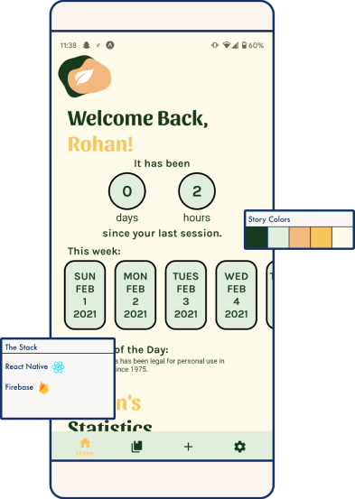

Welcome to Herbal History's Portfolio.
Herbal History is a mobile e-journal app for (medical) marijuana users to record their cannabis usage sessions. Users can customize the journal to add sections and questionnaires based on their own personal reasons for using cannabis.
